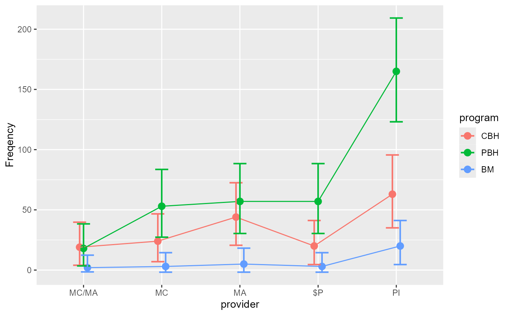

R/ANOFA-emFrequencies.R
emFrequencies.RdThe function emFrequencies() performs a simple effect analyses
of frequencies after an omnibus analysis has been obtained with anofa()
according to the ANOFA framework. See (Laurencelle and Cousineau 2023)
for more.
emFrequencies(w, formula)An ANOFA object obtained from anofa();
A formula which indicates what simple effect to analyze.
only one simple effect formula at a time can be analyzed. The formula
is given using a vertical bar, e.g., ~ factorA | factorB to obtain
the effect of Factor A within every level of the Factor B.
a model fit of the simple effect.
emFrequencies computes expected marginal frequencies and analyze the hypothesis of equal frequencies. The sum of the Gs of the simple effects are equal to the interaction and main effect Gs, as this is an additive decomposition of the effects.
Laurencelle L, Cousineau D (2023). “Analysis of frequency tables: The ANOFA framework.” The Quantitative Methods for Psychology, 19, 173--193. doi:10.20982/tqmp.19.2.p173 .
# Basic example using a two-factors design with the data in compiled format.
# Ficticious data present frequency of observation classified according
# to Intensity (three levels) and Pitch (two levels) for 6 possible cells.
minimalExample
#> Intensity Pitch Frequency
#> 1 Low Soft 2
#> 2 Medium Soft 3
#> 3 High Soft 5
#> 4 Low Hard 4
#> 5 Medium Hard 2
#> 6 High Hard 4
# performs the omnibus analysis first (mandatory):
w <- anofa(Frequency ~ Intensity * Pitch, minimalExample)
summary(w)
#> G df Gcorrected pvalue etasq
#> Total 2.2530 5 NA NA NA
#> Intensity 1.2607 2 1.220 0.5433 0.0593
#> Pitch 0.0000 1 0.000 1.0000 0.0000
#> Intensity:Pitch 0.9923 2 0.866 0.6486 0.1012
# execute the simple effect of Pitch for every levels of Intensity
e <- emFrequencies(w, ~ Pitch | Intensity)
summary(e)
#> G df Gcorrected pvalue etasq
#> Pitch | Low 0.6796 1 0.6630 0.7178 0.10174
#> Pitch | Medium 0.2014 1 0.1964 0.9064 0.03871
#> Pitch | High 0.1113 1 0.1086 0.9471 0.01222
# As a check, you can verify that the Gs are decomposed additively
sum(e$results[,1])
#> [1] 0.9922922
w$results[3,1]+w$results[4,1]
#> [1] 0.9922922
# Real-data example using a two-factor design with the data in compiled format:
LandisBarrettGalvin2013
#> provider program obsfreq
#> 1 MC/MA CBH 19
#> 2 MC/MA PBH 18
#> 3 MC/MA BM 2
#> 4 MC CBH 24
#> 5 MC PBH 53
#> 6 MC BM 3
#> 7 MA CBH 44
#> 8 MA PBH 57
#> 9 MA BM 5
#> 10 $P CBH 20
#> 11 $P PBH 57
#> 12 $P BM 3
#> 13 PI CBH 63
#> 14 PI PBH 165
#> 15 PI BM 20
w <- anofa( obsfreq ~ provider * program, LandisBarrettGalvin2013)
anofaPlot(w)
#> superb::FYI: Running initializer init.count

summary(w)
#> G df Gcorrected pvalue etasq
#> Total 533.19 14 NA NA NA
#> provider 206.57 4 206.20 0.00000 0.2720
#> program 307.77 2 307.40 0.00000 0.3576
#> provider:program 18.85 8 18.69 0.01662 0.4909
# there is an interaction, so look for simple effects
e <- emFrequencies(w, ~ program | provider )
summary(e)
#> G df Gcorrected pvalue etasq
#> program | MC/MA 18.65 2 18.63 0.000931 0.3235
#> program | MC 54.64 2 54.58 0.000000 0.4058
#> program | MA 54.27 2 54.20 0.000000 0.3386
#> program | $P 61.98 2 61.91 0.000000 0.4365
#> program | PI 137.08 2 136.91 0.000000 0.3560
# Example from Gillet1993 : 3 factors for appletrees
Gillet1993
#> species location florished Freq
#> 1 Jonagold Order1 Yes 8
#> 2 Jonagold Order1 No 14
#> 3 Jonagold Order2 Yes 102
#> 4 Jonagold Order2 No 186
#> 5 Jonagold Order3 Yes 84
#> 6 Jonagold Order3 No 79
#> 7 Cox Order1 Yes 16
#> 8 Cox Order1 No 3
#> 9 Cox Order2 Yes 58
#> 10 Cox Order2 No 88
#> 11 Cox Order3 Yes 22
#> 12 Cox Order3 No 53
w <- anofa( Freq ~ species * location * florished, Gillet1993)
e <- emFrequencies(w, ~ florished | location )
# Again, as a check, you can verify that the Gs are decomposed additively
w$results[4,1]+w$results[7,1] # B + B:C
#> [1] 34.34593
sum(e$results[,1])
#> [1] 34.34593
# You can ask easier outputs with
summarize(w) # or summary(w) for the ANOFA table only
#> G df Gcorrected pvalue etasq
#> Total 515.97724 11 NA NA NA
#> species 77.55830 1 77.50394 0.000000 0.09811
#> location 379.25702 2 378.90274 0.000000 0.34722
#> florished 24.95517 1 24.93768 0.000001 0.03382
#> species:location 3.31188 2 3.29839 0.192205 0.39222
#> species:florished 0.06801 1 0.06777 0.794610 0.12578
#> location:florished 9.39076 2 9.35250 0.009314 0.36712
#> species:location:florished 21.43610 2 21.08372 0.000026 0.41984
explain(w) # human-readable ouptut ((pending))
#> [1] "method explain not yet done..."